library(ggmap)
library(maps)
library(tidyverse)O R pode ser usado para fazer mapas!
Nessa aula vamos aprender algumas ferramentas básicas de representações espaciais.
Note
Essa não é minha área então considere apenas uma apresentação das ferramentas possíveis para serem exploradas independentemente!!
maps e ggmap
Podemos plotar mapas de maneira bem simples utilizando o pacote ggmap que segue a mesma estrutura do ggplot2, então todas as opções de customização que já aprendemos podem ser aplicadas
É necessário carregar (instalar previamente, caso não tenha na biblioteca) esses pacotes:
Mapa do mundo
Para gerar um mapa do mundo é BEM simples: basta chamar os dados “world” com a função map_data do ggplot2.
mundo <- map_data("world")
ggplot(mundo, aes(x=long, y=lat, group=group))+
geom_polygon(fill="lightgray", colour = "black")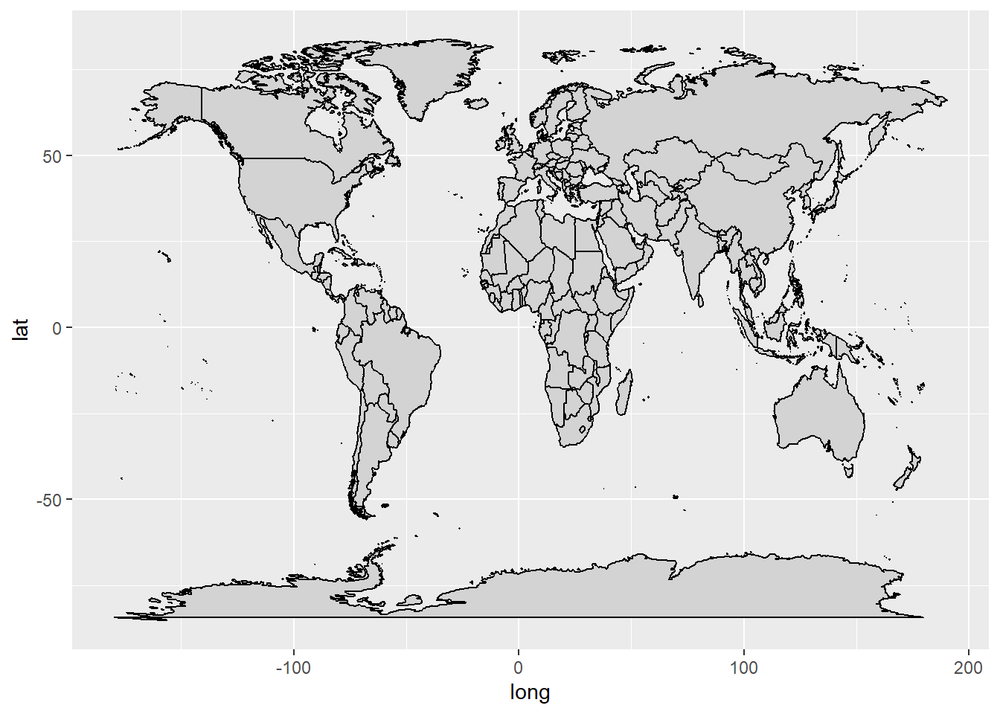
ggplot()+
geom_map(data=mundo, map=mundo, aes(x=long, y=lat, map_id=region))Warning in geom_map(data = mundo, map = mundo, aes(x = long, y = lat, map_id =
region)): Ignoring unknown aesthetics: x and y
Também podemos usar a camada borders do pacote ggmap.
ggplot()+ borders("world", fill = "grey70", colour = "black")+
coord_quickmap()Warning: `borders()` was deprecated in ggplot2 4.0.0.
ℹ Please use `annotation_borders()` instead.
Região delimitada do mapa mundial
Para selecionar determinada região do mapa mundial, podemos usar alguns recursos:
Limitar as dimensões para a região desejada
No caso, estou colocando um ponto vermelho onde fica a cidade de Curitiba e tentando limitar apenas para mostrar o Brasil
Warning
Note que com xlim e ylim como camada não fica bom.
ggplot()+ borders("world", fill = "grey70", colour = "black")+
xlim (-100,-20)+ ylim(-45,10)+
geom_point(aes(x=-49.3044, y=-25.4809, colour = "red")) +
theme(legend.position='none')
Warning
Também continua desconfigurado com os limites inseridos na camada principal
ggplot()+ borders("world", fill = "grey70", colour = "black", xlim= c(-100,-20), ylim=c(-45,10))+
geom_point(aes(x=-49.3044, y=-25.4809, colour = "red")) +
theme(legend.position='none')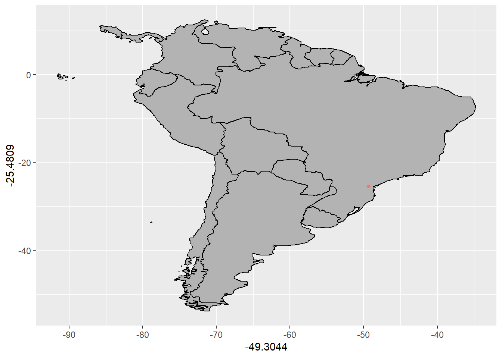
Tip
É necessário utilizar o xlim e ylim no parâmetro coord_fixed() para ficar certo.
ggplot()+ borders("world", fill = "grey70", colour = "black")+
geom_point(aes(x=-49.3044, y=-25.4809, colour = "red")) +
coord_fixed(xlim= c(-100,-20), ylim=c(-45,10))+
theme(legend.position='none')
Região delimitada com map_data do ggplot2
ggplot(mundo, aes(x=long, y=lat, group=group))+
geom_polygon(fill="lightgray", colour = "black")+
geom_point(aes(x=-49.3044, y=-25.4809, colour = "red")) +
coord_fixed(xlim= c(-100,-30), ylim=c(-45,10))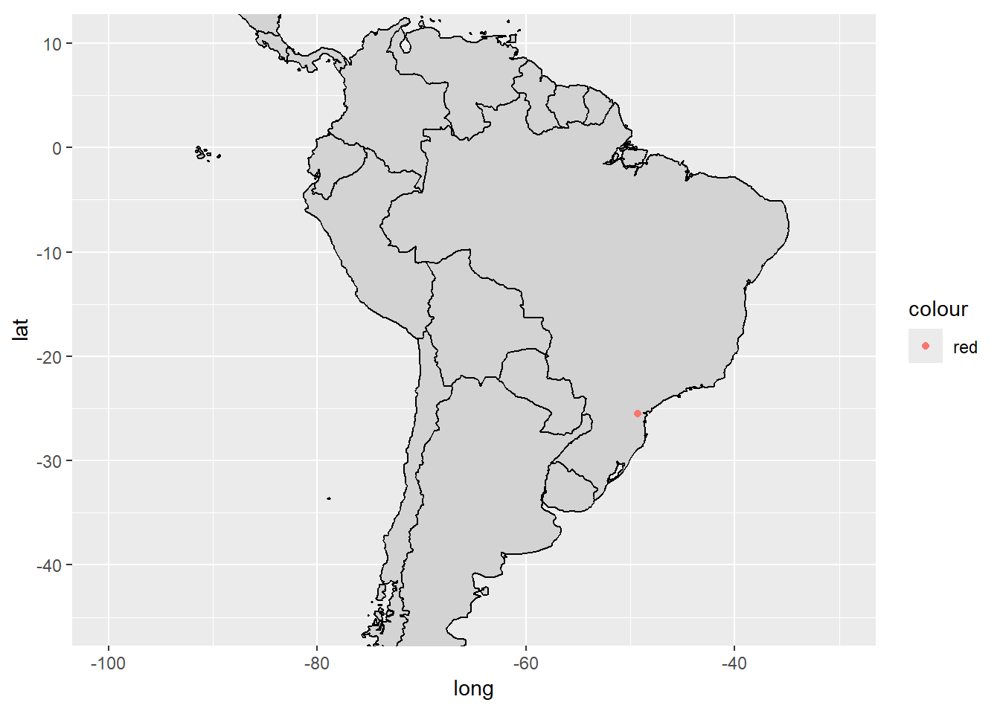
Determinar pelo nome da região desejada, utilizando o parâmetro regions
Tip
Da mesma forma, a projeção só fica boa de verdade com coord_fixed() ou coord_quickmap()
ggplot()+ borders("world",regions = "Brazil", fill = "grey70", colour = "black")+
geom_point(aes(x=-49.3044, y=-25.4809, colour = "red")) +
theme(legend.position='none')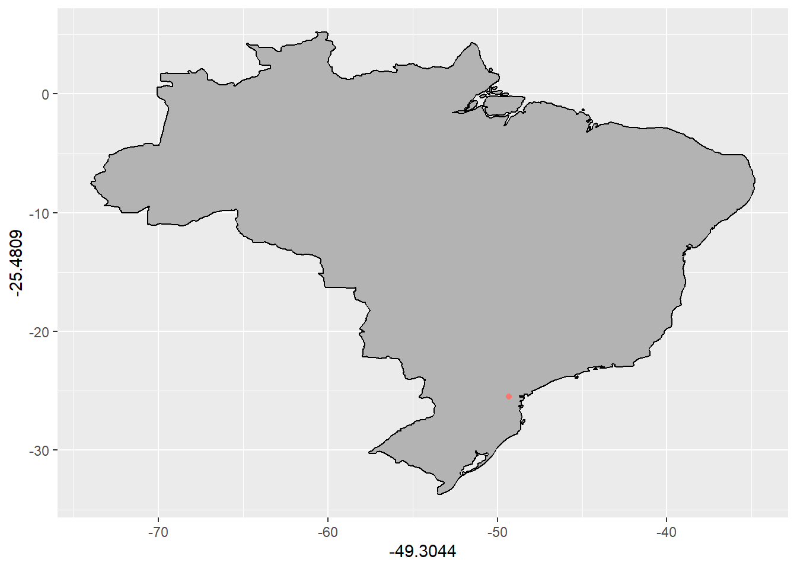
ggplot()+ borders("world",regions = "Brazil", fill = "grey70", colour = "black")+
geom_point(aes(x=-49.3044, y=-25.4809, colour = "red")) +
coord_fixed()+
theme(legend.position='none')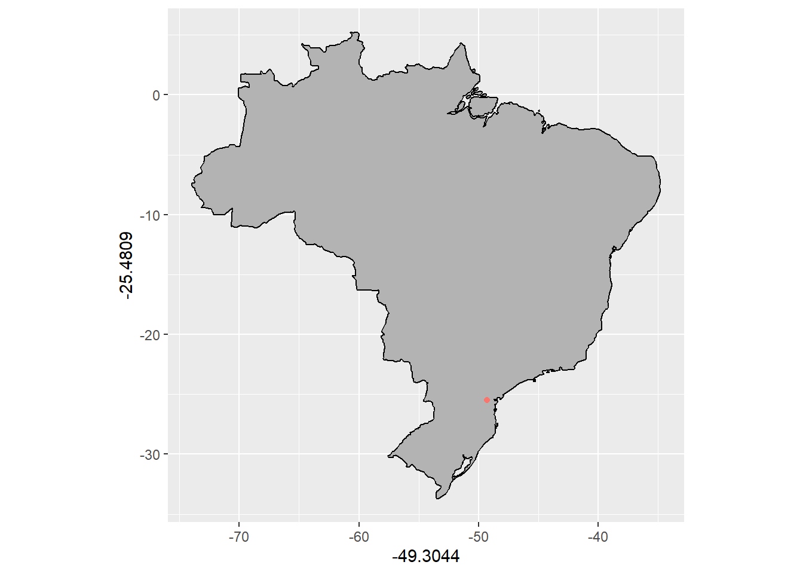
Várias regiões
sa=c("Brazil", "Argentina", "Chile", "Uruguay", "Paraguay", "Ecuador", "Peru", "Venezuela",
"Colombia", "Bolivia", "French Guiana", "Surinam", "Guyana")
mapa_sa<-map_data("world", region=sa)
ggplot(mapa_sa, aes(x=long, y=lat, group=group, fill= region))+
geom_polygon()+
geom_point(aes(x=-49.3044, y=-25.4809, colour = "red")) +
coord_fixed()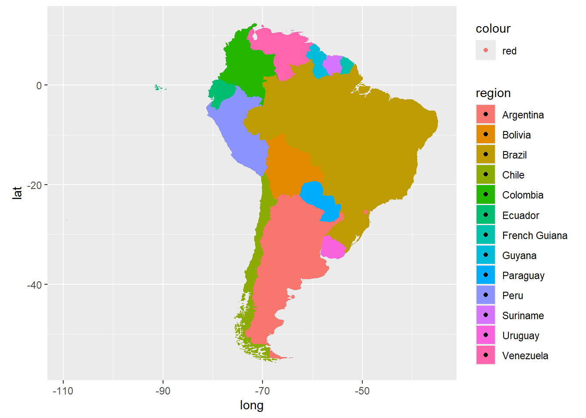
Incluir pontos de um dataset
No dataset deve ter especificado os valores de latitude e longitude.
feederwatch <- readr::read_csv('https://raw.githubusercontent.com/rfordatascience/tidytuesday/master/data/2023/2023-01-10/PFW_2021_public.csv')Rows: 100000 Columns: 22
── Column specification ────────────────────────────────────────────────────────
Delimiter: ","
chr (8): loc_id, subnational1_code, entry_technique, sub_id, obs_id, PROJ_P...
dbl (14): latitude, longitude, Month, Day, Year, how_many, valid, reviewed, ...
ℹ Use `spec()` to retrieve the full column specification for this data.
ℹ Specify the column types or set `show_col_types = FALSE` to quiet this message.ggplot()+ borders("world", fill = "grey70", colour = "black")+
geom_point(aes(x=feederwatch$longitude, y=feederwatch$latitude), color="red", alpha=0.5)+
coord_fixed()
Cortando para região
ggplot()+ borders("world", fill = "grey70", colour = "black")+
geom_point(aes(x=feederwatch$longitude, y=feederwatch$latitude), color="red", alpha=0.5)+
coord_fixed(xlim= c(-170,-50), ylim=c(10,75))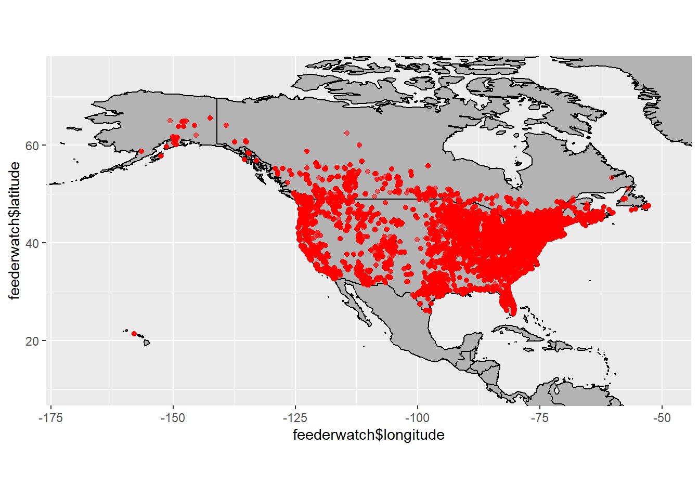
Adicionar a camada geom_map() é melhor para fazer várias camadas de gráficos, usando todos os recursos do ggplot
ggplot(data=feederwatch, aes(x=longitude, y=latitude))+
geom_map(data=mundo, map=mundo, aes(x=long, y=lat, map_id=region), fill="lightgray", color="black")+
geom_point(aes(longitude, y=latitude, color=as.factor(Year)), alpha=0.5)+
coord_fixed(xlim= c(-170,-50), ylim=c(10,75))+
facet_wrap(~Year)Warning in geom_map(data = mundo, map = mundo, aes(x = long, y = lat, map_id =
region), : Ignoring unknown aesthetics: x and y
Utilizando o pacote rgbif (acesso ao banco de dados da GBIF)
GBIF: Global Biodiversity Information Facility
- Carregar o pacote
- Definir a espécie que você quer dando nome científico
- Escolher dados apenas que possuam coordinadas (hasCoordinate=T)
- Pode-se limitar a região por latitude ou longitude ou nomeando o pais pela sigla internacional com 2 letras
- Transformar os dados importados em data frame usando a função as.data.frame()
Ocorrência de Puma concolor para qualquer lugar do mundo
Tip
Limitei com o parâmetro limit para 500 observações senão demora muito pra carregar
library(rgbif)
ocorrencia<-occ_search(scientificName="Puma concolor", hasCoordinate=T, limit=500)
names(ocorrencia)[1] "meta" "hierarchy" "data" "media"
[5] "classifications" "facets" localizacao <- as.data.frame(ocorrencia$data) %>% select(3:4) %>%
rename(Lat = decimalLatitude, Long=decimalLongitude)
head(localizacao) Lat Long
1 -32.860347 -61.97745
2 26.095219 -81.45140
3 25.982568 -100.88071
4 51.193026 -115.19125
5 25.982535 -100.88062
6 8.663483 -83.25675Ocorrência de Puma concolor para o Brasil apenas
ocorrencia.br<-occ_search(scientificName="Puma concolor", country="BR", hasCoordinate=T)
localizacao.br <- as.data.frame(ocorrencia.br$data)%>% select(3:4) %>% rename(Lat = decimalLatitude, Long=decimalLongitude)Agora vamos inserir os pontos de ocorrência num mapa. Podemos usar o borders() como ensinado, ou google maps, ou o que preferir!
ggplot() + borders("world", colour="grey", fill="lightgray") + theme_bw() + geom_point(aes(x=Long,y=Lat),data=localizacao,colour="gold",size=2,alpha=0.1) 
ggplot() + borders("world", colour="grey", fill="lightgray") + theme_bw() + geom_point(aes(x=Long,y=Lat),data=localizacao,colour="gold",size=2,alpha=0.1) + coord_fixed(xlim=c(-150,-20)) #ficando na América apenas
Para ajustar exatamente as medidas do mapa com a distribuição podemos gerar um vetor para restringir as coordenadas, baseado na distribuição máxima e mínima da espécie:
distribuicao<-c(min(localizacao$Long,na.rm=T)-1,
min(localizacao$Lat,na.rm=T)-1,
max(localizacao$Long,na.rm=T)+1,
max(localizacao$Lat,na.rm=T)+1)
ggplot() + borders("world", colour="grey", fill="lightgray") +
theme_bw() +
geom_point(aes(x=Long,y=Lat),data=localizacao,colour="black",size=2,alpha=0.1)+
coord_fixed(xlim=distribuicao[c(1,3)], ylim=distribuicao[c(2,4)])
Pacotes para dados geográficos
Alguns pacotes são bem úteis para baixar dados geográficos diretamente, e vamos conhecer alguns deles que possam ter utilidade na área de ecologia
Pacote geobr
Com vários dados oficiais para o Brasil!
library(geobr)
datasets <- list_geobr()
View(datasets)Vamos criar um shapefile com os municípios do estado do Paraná e plotar usando a função geom_sf do ggplot.
muni_PR <- read_municipality(code_muni = "PR",
year=2020, showProgress = FALSE)Using year/date 2020class(muni_PR)[1] "sf" "data.frame"ggplot() +
geom_sf(data=muni_PR, fill="lightgrey", color="black", show.legend = FALSE) +
theme_minimal()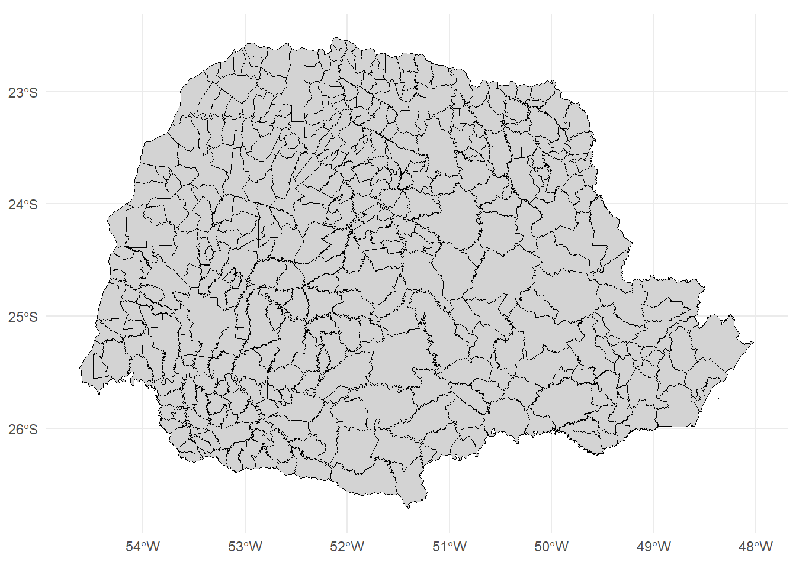
Também é possivel obter os limites dos biomas com geom_br
biomas <- read_biomes(year=2019, showProgress = FALSE)Using year/date 2019head(biomas)Simple feature collection with 6 features and 3 fields
Geometry type: MULTIPOLYGON
Dimension: XY
Bounding box: xmin: -73.98304 ymin: -33.75115 xmax: -28.84785 ymax: 5.269581
Geodetic CRS: SIRGAS 2000
name_biome code_biome year geom
1 Amazônia 1 2019 MULTIPOLYGON (((-44.08515 -...
2 Caatinga 2 2019 MULTIPOLYGON (((-41.7408 -2...
3 Cerrado 3 2019 MULTIPOLYGON (((-43.39009 -...
4 Mata Atlântica 4 2019 MULTIPOLYGON (((-48.70814 -...
5 Pampa 5 2019 MULTIPOLYGON (((-52.82472 -...
6 Pantanal 6 2019 MULTIPOLYGON (((-57.75946 -...ggplot() +
geom_sf(data=biomas, color="black", aes(fill=name_biome)) +
theme_minimal()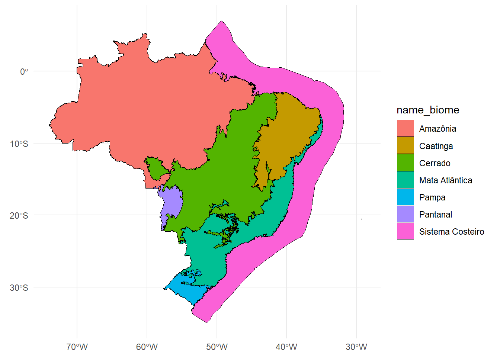
Para tirar o sistema costeiro
ggplot() +
geom_sf(data= slice(biomas,-7), color="black", aes(fill=name_biome)) +
theme_minimal()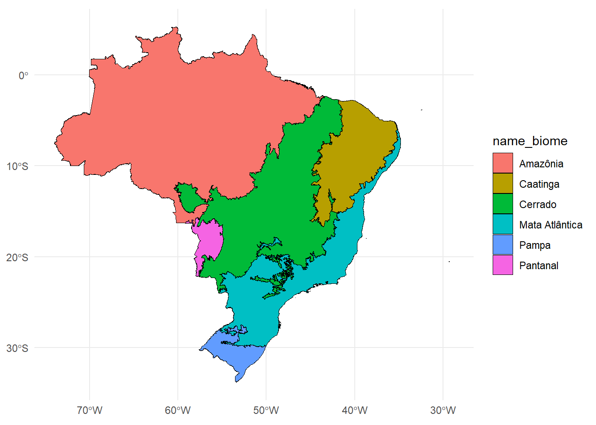
Pacote mapview
Muito legal para fazer mapas interativos! Não necessariamente para publicações, mas talvez apresentações e visualizações diversas.
library(mapview)
# mapview(biomas, zcol = "name_biome")# mapview(muni_PR, zcol = "name_muni")Customização de mapas
Agora vamos aprender a deixar os mapas com qualidade para publicação! Alguns requisitos são essenciais nessa etapa:
- Todo mapa DEVE conter uma barra de escala!
- Todo mapa deve conter também a orientação (apontando para o norte)
- Interessante prestar bastante atenção nas cores
- Não representar países que não são ilhas isoladamente!!
ggplot() +
geom_sf(data= slice(biomas,-7), aes(fill=name_biome, alpha=0.7)) +
theme_minimal()+
scale_fill_manual(values = terrain.colors(7))
Agora do jeito correto, usaremos o pacote ggspatial para inserir o símbolo apontando para o norte e a escala ao mapa (funções annotation_north_arrow e annotation_scale respectivamente).
library(ggspatial)
Tip
Para verificar os diferentes estilos de seta, checar os [exemplos]https://paleolimbot.github.io/ggspatial/reference/north_arrow_orienteering.html
Figura final
ggplot()+ borders("world", fill = "lightgray", colour = "gray")+
geom_sf(data= slice(biomas,-7), aes(fill=name_biome, alpha=0.7)) +
scale_fill_manual(values = terrain.colors(7))+
coord_sf(xlim= c(-80,-30), ylim=c(-40,10))+
theme(legend.position = c(0.8,0.9), legend.background = element_blank(), legend.text=element_text(size=10),
legend.title = element_blank(),
legend.key.size = unit(0.4, "cm"),
panel.grid.major = element_line(color = "darkgray", linetype = "dashed", size = 0.5),
panel.background = element_rect(fill = "aliceblue"),
axis.title = element_blank())+
guides(fill = guide_legend(nrow = 3), alpha= "none")+
annotation_north_arrow(location="br", style=north_arrow_nautical, pad_x = unit(2, "cm"), pad_y = unit(2, "cm"))+
annotation_scale(location = "tl")Warning: The `size` argument of `element_line()` is deprecated as of ggplot2 3.4.0.
ℹ Please use the `linewidth` argument instead.Scale on map varies by more than 10%, scale bar may be inaccurate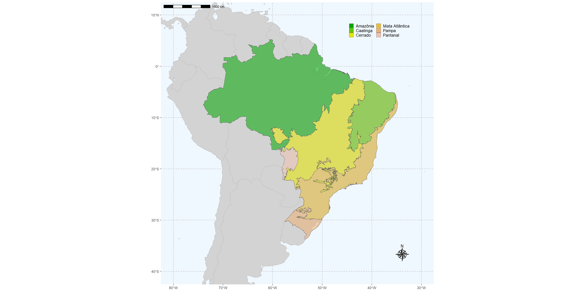
Mapas a partir de shapefiles
Shapefiles (.shp) podem ser encontrados em diversos banco de dados na internet. Alguns comumente utilizados no Brasil são o do IBGE, INPE, ANA e diversos sites do governo. Para dados internacionais, temos vários disponíveis gratuitamente
> confira uma tabela nesse link: https://www.oryxthejournal.org/writing-for-conservation-guide/map-with-a-message.html#tab:data-sources
Pacote terra como subtituto do finado raster
Muito conteúdo BEM completo no site deles https://rspatial.org/pkg/index.html
Vários dados disponíveis no site do INPE http://www.dpi.inpe.br/Ambdata/download.php
Outra opção (que eu achei bem mais pesada) é usar o pacote geodata Útil para dados globais de clima (wordclim), elevação, uso da terra, solo, ocorrência de espécies pelo gbif, limites administrativos, etc.
Opções para dados globais (função worldclim_global), por país (worldclim_country) ou para determinada latitude e longitude (worldclim_tile)
library(geodata)
clim_brasil <- worldclim_country(country= “BR”, var=“bio”, res=10, download=T, path= tempdir(), version = “2.1”)
Vamos baixar apenas a bio1 - Temperatura média pra ir mais rápido, ams se for baixar todas vai vir num arquivo .zip e será nescessário unzip na sua pasta de destino para utilizar.
download.file("http://www.dpi.inpe.br/amb_data/Brasil/bio1_br.asc", destfile="bio1_br.asc")library(terra)
temp <- rast('bio1_br.asc')
class(temp)[1] "SpatRaster"
attr(,"package")
[1] "terra"plot(temp)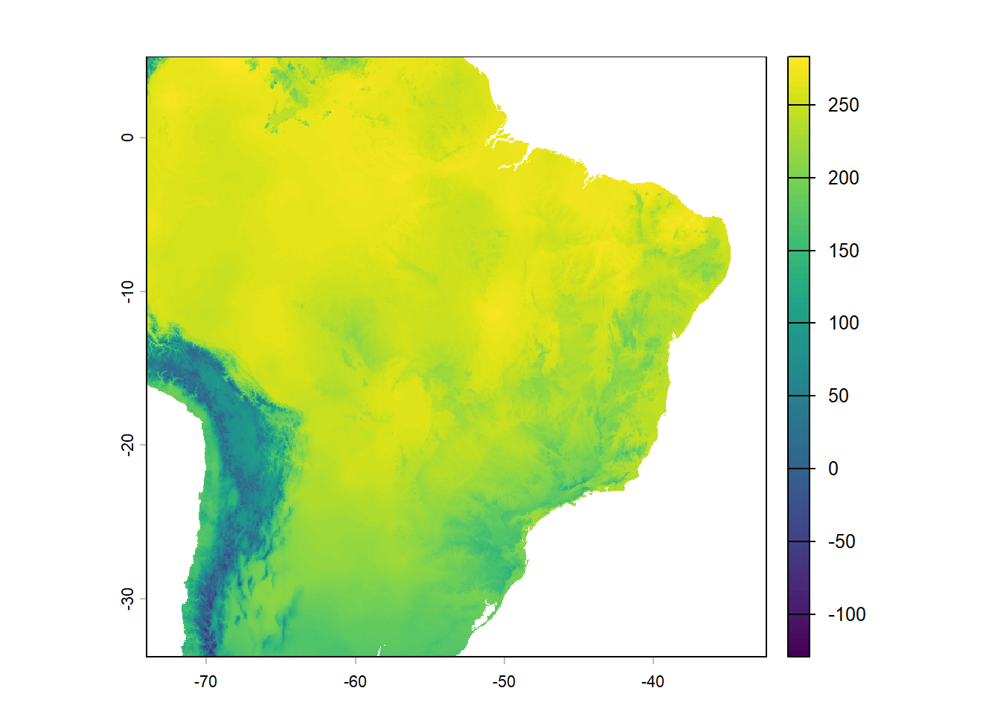
Para plotar com ggmap precisa transformar em dataframe
Tip
Para saber as unidades e quais são as variáveis verificar em https://www.worldclim.org/
temp_df <- as.data.frame(temp, xy=T)
ggplot() +
geom_tile(data = temp_df,
aes(x = x, y = y, fill = bio1_br/10))+ #unidade do worldclim é oC*10
theme_bw()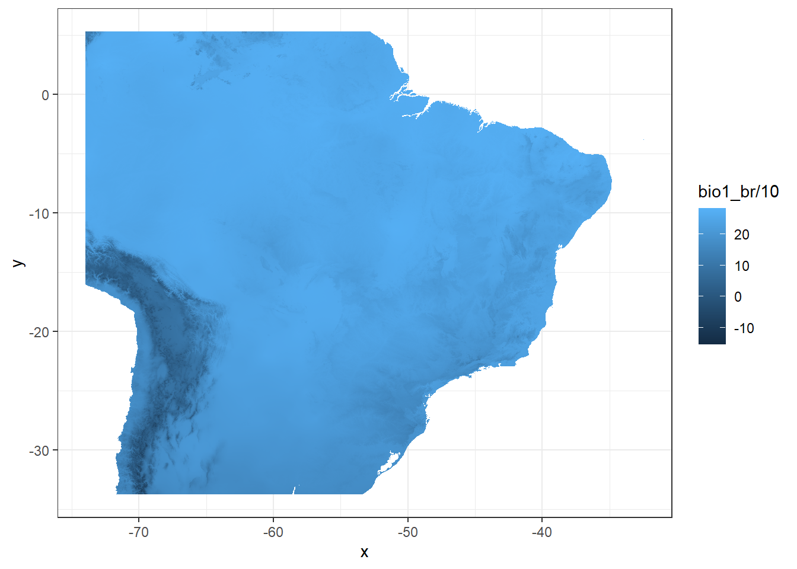
Agora se a gente quiser só para alguma localização específica,temos que editar o arquivo. Para isso temos a função crop
ext <- c(-50,-40, -25,-20) # Para alguma localização específica
temp_x <- crop(temp, ext)
plot(temp_x)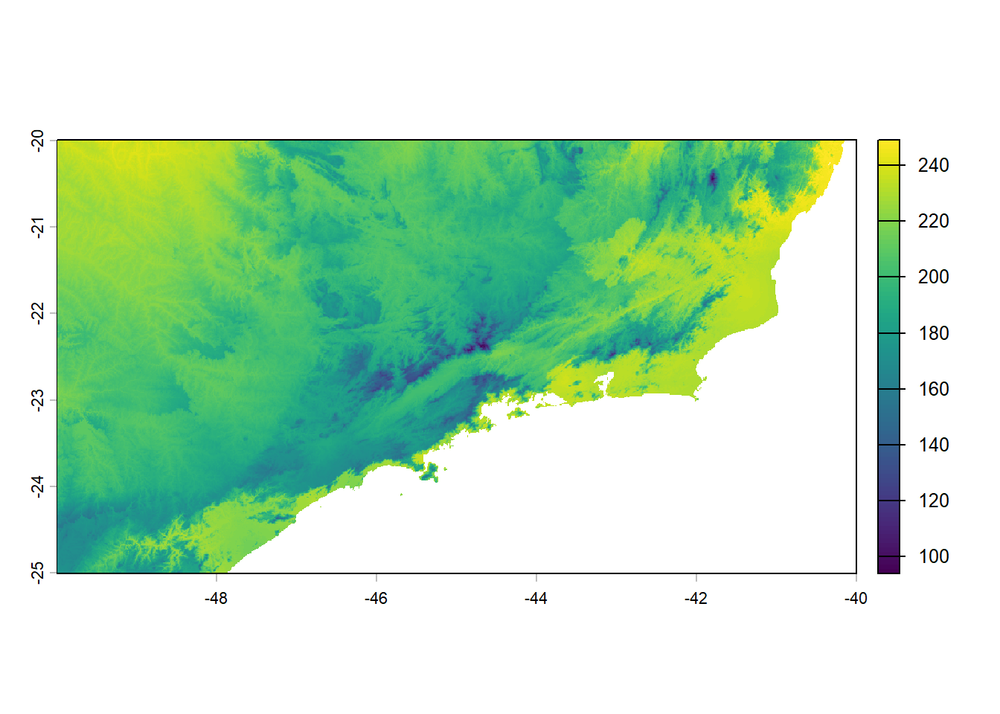
Para o Paraná vamos usar o shape do geobr para cortar o raster no tamanho certo
estado_PR <- read_state(code_state = "PR",
year=2020,
showProgress = FALSE)Using year/date 2020ggplot() +
geom_sf(data=estado_PR, fill="lightgrey", color="black", show.legend = FALSE) +
theme_minimal()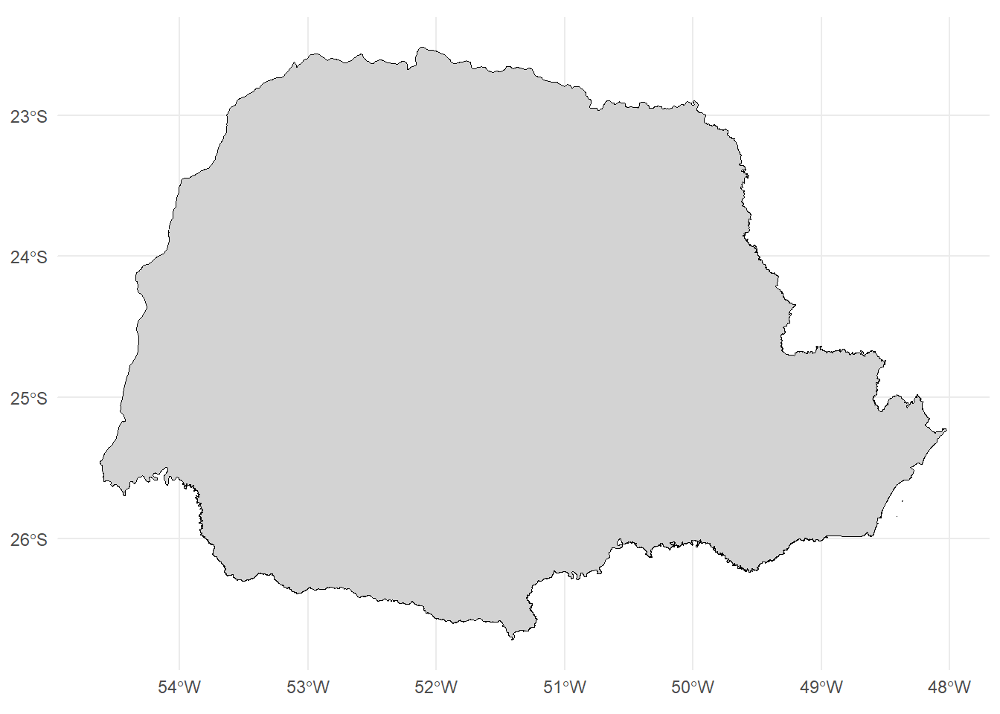
temp_pr <- crop(temp, estado_PR)
temp_pr_df <- as.data.frame(temp_pr, xy=T)
ggplot() +
geom_tile(data=temp_pr_df, aes(x,y, fill=bio1_br/10))+
theme_minimal()+
coord_equal()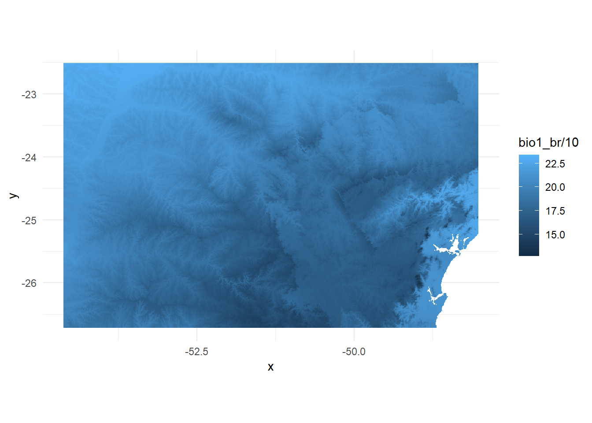
Tip
Atenção para customizações de escala!!! O resultado do seu mapa depende muito disso!
ggplot()+
geom_tile(data=temp_pr_df, aes(x,y, fill=bio1_br/10))+
scale_fill_gradient2(na.value="white", low= "steelblue3", mid="gray94", high="brown3", limits=c(10, 29), midpoint = 18, breaks = c(10, 15,20, 25))+
geom_sf(data=estado_PR, fill=NA, color="black", show.legend = FALSE) +
theme(axis.text = element_blank(), axis.ticks = element_blank(),
axis.title = element_blank(), panel.background = element_blank())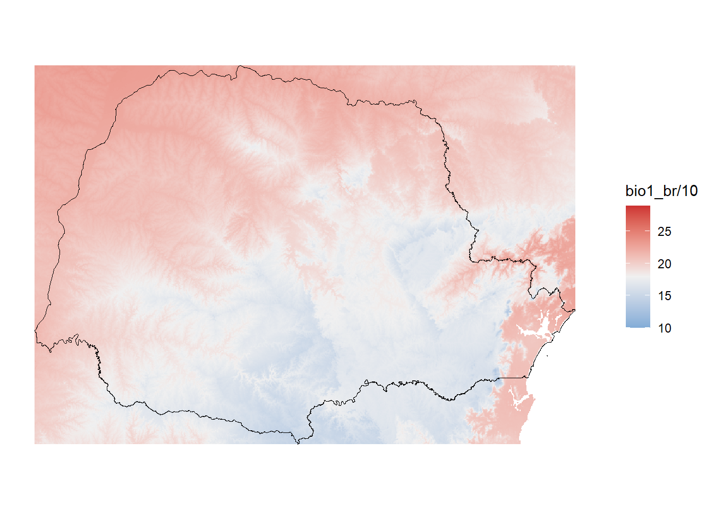
Alguns sites/livros úteis para aprofundar em R espacial
https://www.ecologi.st/spatial-r/
https://tmieno2.github.io/R-as-GIS-for-Economists/
https://damariszurell.github.io/EEC-MGC/a1_SpatialData.html